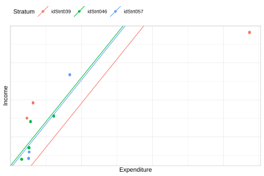
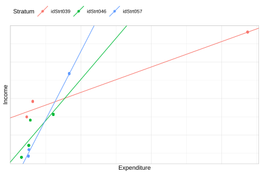

7.3 Modelo lineal multinivel
Los modelos multinivel más utilizados en la práctica corresponden a extensiones del modelo lineal clásico para datos con estructura jerárquica. En su formulación básica, estos modelos asumen que la variable respuesta es continua y sigue una distribución normal condicional a los efectos fijos y aleatorios incluidos en el modelo. Asimismo, se supone que los efectos aleatorios y los errores residuales son independientes entre sí y se distribuyen normalmente con media cero y varianzas constantes.
7.3.1 Modelo nulo
En el análisis de regresión multinivel se distinguen dos tipos de parámetros: los coeficientes de regresión, conocidos como parámetros fijos, y los componentes de varianza asociados a los efectos aleatorios. Una etapa inicial fundamental en este tipo de análisis consiste en descomponer la variabilidad total de la variable dependiente en los distintos niveles de la estructura jerárquica. En el contexto del ejemplo anterior, esta descomposición permite separar la variación del ingreso en una componente atribuible a diferencias dentro de los estratos y otra asociada a diferencias entre estratos.
El punto de partida para esta descomposición es el denominado modelo nulo, el cual no incorpora variables explicativas y se expresa como
\[ y_{kj} = \beta_{0j} + \epsilon_{kj} \]
En donde \(y_{kj}\) denota el valor observado del ingreso para la unidad \(k\) en el estrato \(j\). El término \(\beta_{0j}\) representa el intercepto específico de cada estrato, capturando las diferencias en los niveles promedio de la variable entre grupos. Finalmente, \(\epsilon_{kj}\) corresponde al error a nivel de unidad, el cual recoge la variabilidad no explicada dentro de cada estrato y se asume con media cero y varianza constante condicional al grupo.
A su vez, el intercepto por estrato puede descomponerse en una parte común a todos los estratos y una desviación específica de cada uno de ellos, de la siguiente forma:
\[ \beta_{0j} = \gamma_{00} + \tau_{0j} \]
donde \(\gamma_{00}\) representa el intercepto promedio global y \(\tau_{0j}\) es el efecto aleatorio para el intercepto que captura la desviación del estrato \(j\), permitiendo modelar explícitamente la heterogeneidad entre estratos. Además, los componentes aleatorios del modelo se asumen distribuidos normalmente con media cero y varianzas específicas para cada nivel de la jerarquía. En particular, el efecto aleatorio asociado al intercepto por estrato cumple
\[ \tau_{0j} \sim N\left(0, \sigma_{\tau}^{2}\right), \]
lo que implica que las desviaciones de cada estrato respecto al intercepto global se distribuyen alrededor de cero, con una variabilidad determinada por \(\sigma_{\tau}^{2}\). De manera análoga, el término de error a nivel de unidad sigue la distribución
\[ \epsilon_{kj} \sim N\left(0, \sigma_{\epsilon}^{2}\right), \]
donde \(\sigma_{\epsilon}^{2}\) representa la variabilidad residual dentro de los estratos. A partir de este modelo se define el coeficiente de correlación intraclase (ICC, por sus siglas en inglés), que cuantifica la proporción de la varianza total explicada por las diferencias entre estratos:
\[ \rho = \frac{\sigma_{\tau}^{2}}{\sigma_{\tau}^{2} + \sigma_{\epsilon}^{2}} \]
Un valor elevado del ICC indica que una proporción importante de la variabilidad total de la variable de interés se debe a diferencias entre estratos, lo que sugiere la presencia de heterogeneidad relevante entre grupos y la necesidad de incorporar explícitamente dicha estructura en el modelo. En contraste, un ICC bajo implica que la variabilidad se concentra principalmente dentro de los estratos, los cuales presentan una mayor homogeneidad relativa entre sí.
Siguiendo con el análisis de la encuesta de ejemplo, cuando la variable de interés es el ingreso, el modelo nulo constituye el punto de partida para cuantificar qué proporción de la variabilidad total se debe a diferencias entre estratos y qué proporción corresponde a diferencias entre hogares dentro de un mismo estrato.
La estimación de modelos multinivel en Rse realiza mediante el paquete lme4 (Bates et al., 2026). En particular, la función lmer() permite especificar los efectos aleatorios mediante expresiones de la forma (efecto | grupo). En este contexto, la expresión (1 | Stratum) indica que el modelo incluye un intercepto aleatorio para cada estrato. El valor 1 representa el intercepto del modelo, mientras que Stratum identifica la variable de agrupación.
La Tabla 7.1 presenta los interceptos estimados para cada estrato a partir del modelo nulo. Dado que este modelo no incorpora variables explicativas, cada intercepto puede interpretarse como el ingreso promedio esperado en el correspondiente estrato. Los resultados evidencian diferencias importantes entre grupos: mientras que el estrato idStrt004 presenta el mayor ingreso promedio estimado (959.6), el estrato idStrt009 registra el menor valor (207.6). Estas diferencias sugieren la existencia de una variabilidad sustancial entre estratos, justificando la incorporación de efectos aleatorios para modelar explícitamente la estructura jerárquica de los datos.
| (Intercept) | |
|---|---|
| idStrt001 | 634.7 |
| idStrt002 | 507.5 |
| idStrt003 | 485.6 |
| idStrt004 | 960.0 |
| idStrt005 | 518.3 |
| idStrt006 | 439.3 |
| idStrt007 | 477.4 |
| idStrt008 | 377.0 |
| idStrt009 | 218.2 |
| idStrt010 | 593.7 |
| idStrt011 | 590.5 |
| idStrt012 | 361.6 |
A partir de los componentes de varianza estimados en el modelo nulo, la correlación intraclase se calcula mediante la función icc() del paquete performance (Lüdecke et al., 2026). Este indicador cuantifica la proporción de la variabilidad total del ingreso que puede atribuirse a diferencias entre estratos, constituyendo una medida de la dependencia existente entre observaciones pertenecientes a un mismo grupo. Los resultados obtenidos se presentan en la Tabla 7.2.
| ICC_adjusted | ICC_unadjusted | optional |
|---|---|---|
| 0.329 | 0.329 | FALSE |
La correlación intraclase estimada de 32% indica que aproximadamente un tercio de la variabilidad total observada en el ingreso se debe a diferencias entre estratos, mientras que el porcentaje restante corresponde a diferencias entre hogares dentro de los mismos estratos. Por último, como el modelo nulo no incluye ningún predictor, la estimación del ingreso dentro de cada estrato es constante e igual al intercepto estimado para ese estrato.
7.3.2 Modelo con intercepto aleatorio
El modelo multinivel más simple que incorpora covariables corresponde al modelo de intercepto aleatorio. En esta especificación, se asume que los efectos de las variables explicativas son comunes a todos los estratos, mientras que el nivel promedio de la variable respuesta puede variar entre ellos. El modelo se expresa como
\[ y_{kj} = \beta_{0j} + \mathbf{x}_{kj}\boldsymbol{\beta} + \epsilon_{kj} \]
En donde \(y_{kj}\) representa el valor observado de la variable respuesta para la unidad \(k\) perteneciente al estrato \(j\), \(\mathbf{x}_{kj}\) es el vector de covariables asociado a dicha unidad, \(\boldsymbol{\beta}\) es el vector de coeficientes de regresión comunes a todos los estratos y \(\epsilon_{kj}\) corresponde al error aleatorio a nivel de unidad.
Al igual que en el modelo nulo, el intercepto se modela como \(\beta_{0j} = \gamma_{00} + \tau_{0j}\); en donde \(\gamma_{00}\) representa el intercepto promedio global y \(\tau_{0j}\) es el efecto aleatorio asociado al estrato \(j\), que mide la desviación de dicho estrato respecto al promedio general.
Los componentes aleatorios del modelo se asumen independientes y normalmente distribuidos, de manera que \(\tau_{0j} \sim N(0,\sigma_{\tau}^{2})\) y \(\epsilon_{kj} \sim N(0,\sigma_{\epsilon}^{2})\). Bajo estas condiciones, la variabilidad total de la variable respuesta puede descomponerse en una componente entre estratos, cuantificada por \(\sigma_{\tau}^{2}\), y una componente dentro de los estratos, representada por \(\sigma_{\epsilon}^{2}\).
El siguiente código ajusta un modelo multinivel de intercepto aleatorio, en donde el ingreso (Income) se explica a partir del gasto del hogar (Expenditure), incorporando además un efecto aleatorio asociado al estrato (Stratum) y utilizando los pesos q-weighted almacenados en la variable qk. Una vez ajustado el modelo, se estima la correlación intraclase (ICC) a partir de los componentes de varianza estimados.
mod_Int_Aleatorio <- lmer(Income ~ Expenditure + (1 | Stratum),
data = encuesta, weights = qk)
performance::icc(mod_Int_Aleatorio)## # Intraclass Correlation Coefficient
##
## Adjusted ICC: 0.203
## Unadjusted ICC: 0.109La correlación intraclase ajustada de 0.196 indica que, después de controlar por el gasto del hogar (Expenditure), aproximadamente el 20% de la variabilidad residual del ingreso sigue siendo atribuible a diferencias entre estratos. Aunque este valor es inferior al obtenido con el modelo nulo, la magnitud del ICC continúa justificando el uso de un modelo multinivel para representar adecuadamente la estructura jerárquica de los datos. Los coeficientes estimados por estrato se presentan en la Tabla 7.3:
| (Intercept) | Expenditure | |
|---|---|---|
| idStrt001 | 250.44 | 1.189 |
| idStrt002 | 156.81 | 1.189 |
| idStrt003 | 142.89 | 1.189 |
| idStrt004 | 296.81 | 1.189 |
| idStrt005 | -32.43 | 1.189 |
| idStrt006 | 53.78 | 1.189 |
| idStrt007 | 12.46 | 1.189 |
| idStrt008 | 107.14 | 1.189 |
Con el fin de facilitar la visualización de los resultados del modelo, se utiliza la submuestra reducida presentada anteriormente, la cual contiene únicamente tres estratos seleccionados.
Coef_Estimado <- inner_join(
coef(mod_Int_Aleatorio)$Stratum %>%
tibble::rownames_to_column(var = "Stratum"),
encuesta_plot %>%
dplyr::select(Stratum) %>% distinct()
)La Figura 7.5 muestra las rectas de regresión estimadas para cada estrato bajo el modelo de intercepto aleatorio. Se observa que las rectas comparten una misma pendiente, reflejando el efecto común del gasto sobre el ingreso, pero difieren en su posición vertical debido a los interceptos específicos estimados para cada estrato.
ggplot(data = encuesta_plot,
aes(y = Income, x = Expenditure, colour = Stratum)) +
geom_jitter() +
geom_abline(data = Coef_Estimado,
mapping = aes(slope = Expenditure,
intercept = `(Intercept)`,
colour = Stratum)) +
theme(legend.position = "none",
plot.title = element_text(hjust = 0.5)) +
theme_cepal()
Figura 7.5: Rectas de regresión estimadas por estrato: modelo con intercepto aleatorio
7.3.3 Modelo con intercepto y pendiente aleatoria
Una extensión natural del modelo anterior es el modelo de intercepto y pendiente aleatorios. En esta especificación, no sólo se permite que el nivel promedio de la variable respuesta varíe entre estratos, sino también que el efecto de una o más covariables difiera entre grupos. De esta manera, cada estrato puede tener su propia recta de regresión, tanto en términos de intercepto como de pendiente. El modelo puede expresarse como
\[ y_{kj} = \beta_{0j} + x_{kj}\beta_{1j} + \mathbf{z}_{kj}\boldsymbol{\beta} + \epsilon_{kj}, \]
donde \(y_{kj}\) representa el valor observado de la variable respuesta para la unidad \(k\) perteneciente al estrato \(j\), \(x_{kj}\) corresponde a la covariable cuya pendiente se permite variar entre estratos, \(\mathbf{z}_{kj}\) contiene las covariables con efectos fijos comunes a todos los grupos, y \(\epsilon_{kj}\) es el término de error a nivel de unidad. En este modelo, tanto el intercepto como la pendiente asociada a \(x_{kj}\) se consideran aleatorios y se descomponen de la siguiente forma:
\[ \beta_{0j} = \gamma_{00} + \tau_{0j}, \qquad \beta_{1j} = \gamma_{10} + \tau_{1j} \]
donde \(\gamma_{00}\) y \(\gamma_{10}\) representan, respectivamente, el intercepto y la pendiente promedio en la población, mientras que \(\tau_{0j}\) y \(\tau_{1j}\) capturan las desviaciones específicas del estrato \(j\) respecto a dichos promedios. Estos efectos aleatorios se asumen normalmente distribuidos como se indica a continuación:
\[ \begin{pmatrix} \tau_{0j} \\ \tau_{1j} \end{pmatrix} \sim N\left( \begin{pmatrix} 0 \\ 0 \end{pmatrix}, \begin{pmatrix} \sigma_{\tau_0}^2 & \sigma_{\tau_{01}} \\ \sigma_{\tau_{01}} & \sigma_{\tau_1}^2 \end{pmatrix} \right), \]
mientras que el error a nivel de unidad satisface \(\epsilon_{kj} \sim N(0,\sigma_{\epsilon}^{2})\). En consecuencia, el modelo permite cuantificar no sólo la variabilidad entre estratos en los niveles promedio de la variable respuesta, sino también la heterogeneidad existente en el efecto de la covariable cuyo coeficiente se modela como aleatorio.
El siguiente código ajusta un modelo multinivel con intercepto y pendiente aleatorios, en el que el ingreso (Income) se explica a partir del gasto del hogar (Expenditure) y de la zona de residencia (Zone). En este caso, tanto el intercepto como el efecto del gasto pueden variar entre estratos mediante efectos aleatorios asociados a Stratum, empleando además los pesos q-weighted almacenados en la variable qk.
mod_Pen_Aleatorio <- lmer(
Income ~ 1 + Expenditure + (1 + Expenditure | Stratum),
data = encuesta,
weights = qk
)
performance::icc(mod_Pen_Aleatorio)## # Intraclass Correlation Coefficient
##
## Adjusted ICC: 0.690
## Unadjusted ICC: 0.457Nótese que en la especificación del código se incluye simultáneamente efectos fijos y efectos aleatorios para el intercepto y la variable Expenditure. Los términos ubicados fuera del paréntesis, 1 + Expenditure, corresponden a los efectos fijos del modelo y permiten estimar el intercepto promedio global y la pendiente promedio global asociada al gasto. Por su parte, la expresión (1 + Expenditure | Stratum) incorpora las desviaciones específicas de cada estrato respecto a dichos promedios. La inclusión explícita de los efectos fijos es fundamental, ya que los efectos aleatorios se interpretan como desviaciones alrededor de una media poblacional. Los coeficientes del modelo por estrato se presentan en la Tabla 7.4:
| (Intercept) | Expenditure | |
|---|---|---|
| idStrt001 | -222.76 | 2.730 |
| idStrt002 | 35.51 | 1.607 |
| idStrt003 | 151.86 | 1.164 |
| idStrt004 | 224.20 | 1.353 |
| idStrt005 | -89.69 | 1.286 |
| idStrt006 | 28.59 | 1.217 |
| idStrt007 | 40.98 | 1.079 |
| idStrt008 | 163.81 | 0.928 |
| idStrt009 | 16.55 | 0.838 |
| idStrt010 | 89.91 | 1.830 |
Una vez más, Con el propósito de facilitar la visualización de los resultados, se utiliza la submuestra reducida definida previamente, la cual considera únicamente tres estratos seleccionados.
Coef_Estimado <- inner_join(
coef(mod_Pen_Aleatorio)$Stratum %>%
tibble::rownames_to_column(var = "Stratum"),
encuesta_plot %>%
dplyr::select(Stratum) %>% distinct()
)La Figura 7.6 presenta las rectas de regresión estimadas para cada estrato bajo el modelo de intercepto y pendiente aleatorios. A diferencia del modelo de intercepto aleatorio, en este caso las rectas difieren tanto en su posición vertical como en su inclinación, reflejando que los estratos no sólo presentan niveles promedio de ingreso distintos, sino también diferentes intensidades en la relación entre ingreso y gasto.
ggplot(data = encuesta_plot,
aes(y = Income, x = Expenditure, colour = Stratum)) +
geom_jitter() +
geom_abline(data = Coef_Estimado,
mapping = aes(slope = Expenditure,
intercept = `(Intercept)`,
colour = Stratum)) +
theme(legend.position = "none",
plot.title = element_text(hjust = 0.5)) +
theme_cepal()
Figura 7.6: Rectas de regresión estimadas por estrato: modelo con intercepto y pendiente aleatoria